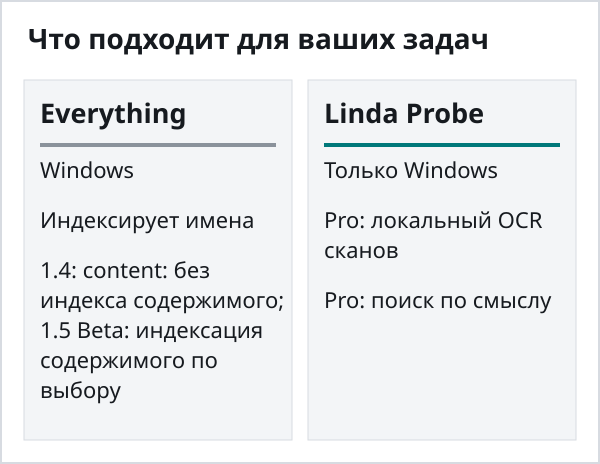
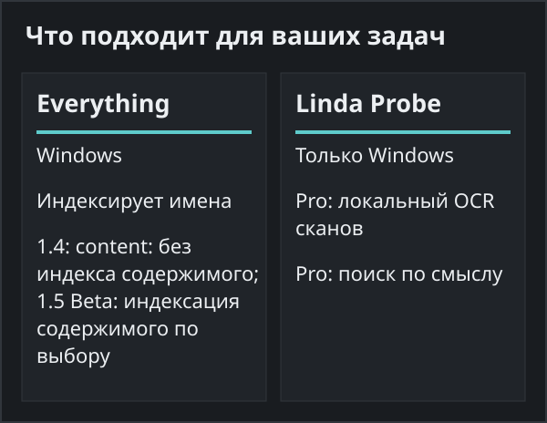
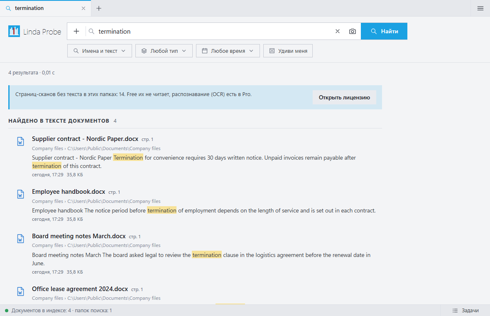

Linda Probe или Everything
Everything прежде всего ищет файлы по имени; версия 1.4 поддерживает content: без индексации содержимого, а 1.5 Beta предлагает индексацию содержимого по выбору. Probe также ищет внутри документов. Если вы помните имя файла, вам может хватить Everything. Сравнение основано на публичном сайте конкурента по состоянию на 30 октября 2026 года.
Выбирайте Everything, если
Everything прежде всего предназначен для быстрого поиска по именам файлов в Windows. Версия 1.4 также поддерживает поиск content: без индексации содержимого. В Everything 1.5 Beta можно включить индексацию содержимого файлов.
Выбирайте Linda Probe, если
Вам нужен поиск по содержимому документов, предпросмотр и ручные теги. Это есть в Probe Free. Если в папках есть сканы PDF или вы помните лишь тему документа, Probe Pro добавляет локальный OCR и поиск по смыслу. Это повод попробовать Probe, но не доказательство преимущества в скорости.


Чего нет в Linda Probe
Код закрыт, программа работает только в Windows 10 и 11. Бесплатная версия ищет только по именам и точным словам. Для OCR и поиска по смыслу нужен Probe Pro, активированный платным или подарочным лицензионным ключом. Установщик с GitHub пока не подписан, поэтому Windows SmartScreen может показать предупреждение: сверьте SHA-256 на странице релиза и выберите «Подробнее» → «Выполнить в любом случае». Версия из Microsoft Store подписана Microsoft; сборка на GitHub часто новее. На плохих сканах и рукописном тексте OCR ошибается.

Цена
Linda Probe Free предназначен для личного некоммерческого использования. Probe Pro Personal стоит 10 USD разово для одного указанного пользователя на 3 устройствах; Team: 30 USD разово для 10 указанных пользователей на 20 устройствах. Лицензии распространяются на купленную версию и исправления; новые основные версии или модели могут потребовать оплаты. Organization стоит 500 USD в год для одной организации на одной площадке, до 200 устройств, и автоматически продлевается до отмены. Налог и итоговая сумма показываются до оплаты. Для Personal и Team можно запросить полный возврат в течение 14 дней.
Согласно официальному FAQ, Everything распространяется бесплатно как freeware.
На указанных ниже страницах Everything мы не смогли подтвердить локальный OCR сканов и поиск по смыслу. Это не означает, что такие функции никогда не появятся.
Официальные источники для этого сравнения: Everything FAQ · Everything · Everything 1.5 Beta: content indexing.